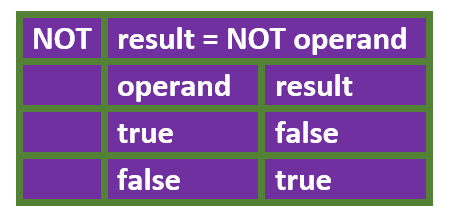

Boolean
Unit 3, Boolean Expressions & If
Derived from the creator of Boolean Algebra, George Boole, the term refers to outcomes having values of either true or false, nothing else.
Boolean Expression
Unit 3, Boolean Expressions & If
Logical statement that is either true or false.
Like, goals > 15
Boolean Operators
Unit 3, Boolean Expressions & If
Operators that act on boolean variables. The 3 basic Boolean operators are AND (Java, &&), OR (Java, ||) and NOT (Java, !).
AND Operation
Unit 3, Boolean Expressions & If

OR Operation
Unit 3, Boolean Expressions & If

NOT Operation
Unit 3, Boolean Expressions & If

One Way Selection Statement
Unit 3, Boolean Expressions & If
Statement that makes a single decision based on boolean expression.
Two Way Selection Statement
Unit 3, Boolean Expressions & If
Statement that supports decision based on the value of a boolean expression, and a single alternative.

Multi-Way Selection Statement
Unit 3, Boolean Expressions & If
Statement supporting multiple decisions based on value of multiple boolean expressions.
Alias
Unit 3, Boolean Expressions & If
Two objects are aliases of each other if they refer to the same memory location. In the diagram, player1 and player2 end up as aliases.